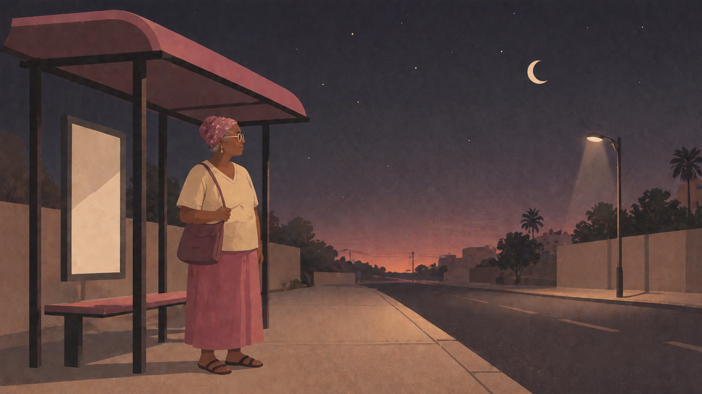
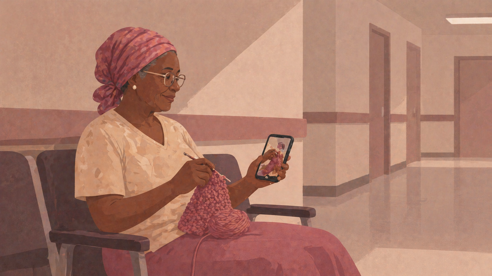
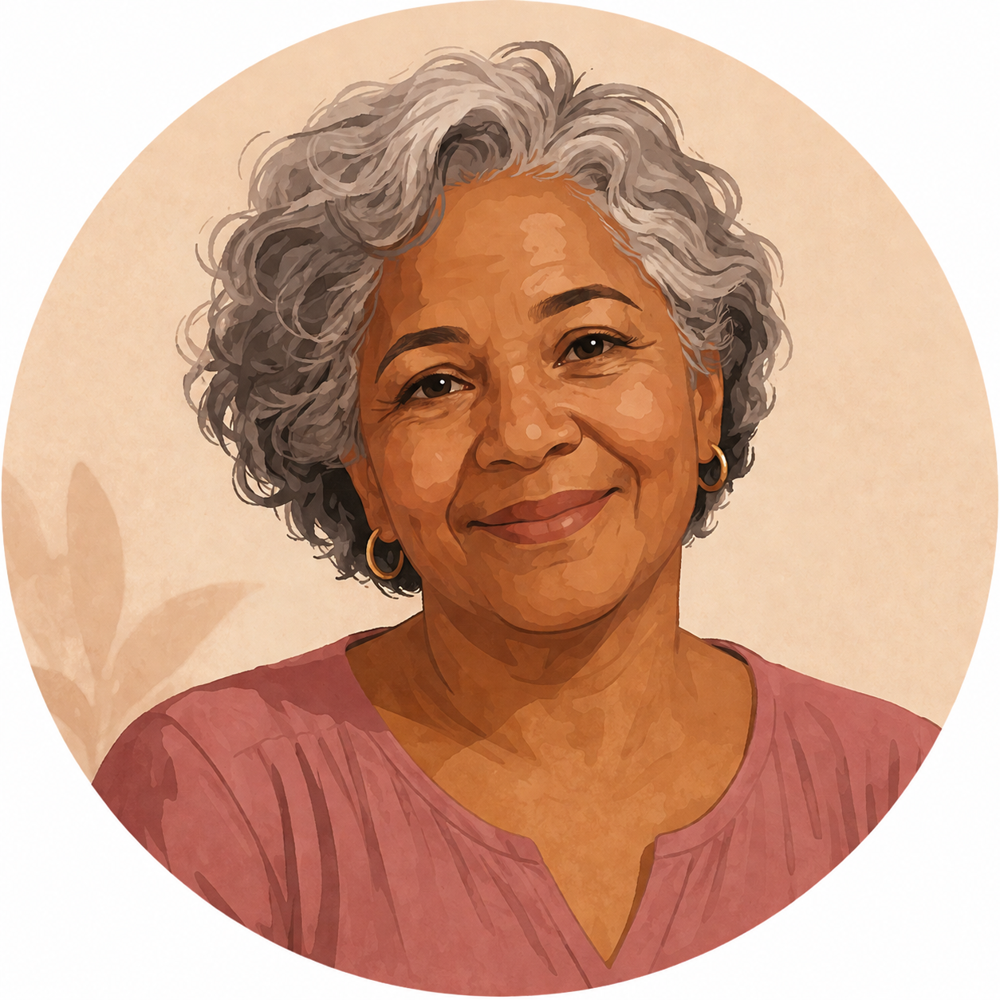
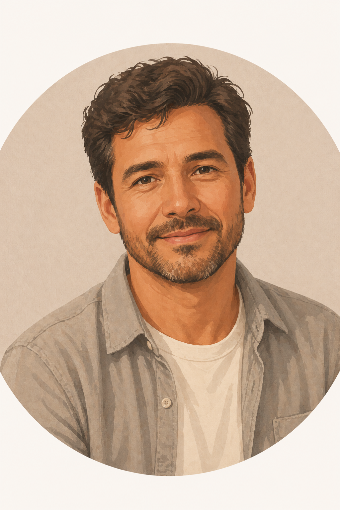
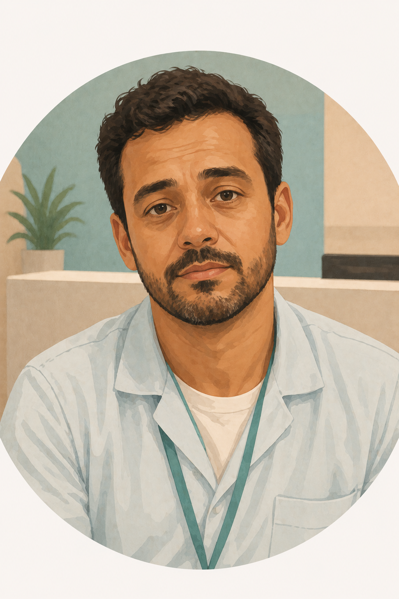
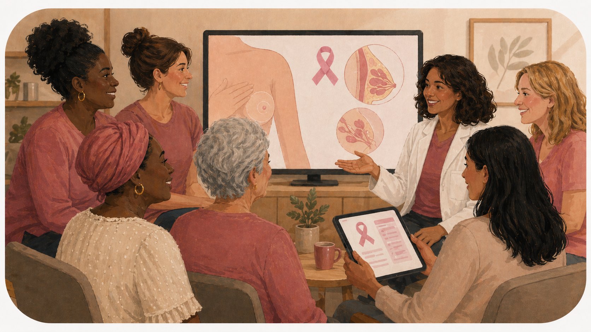
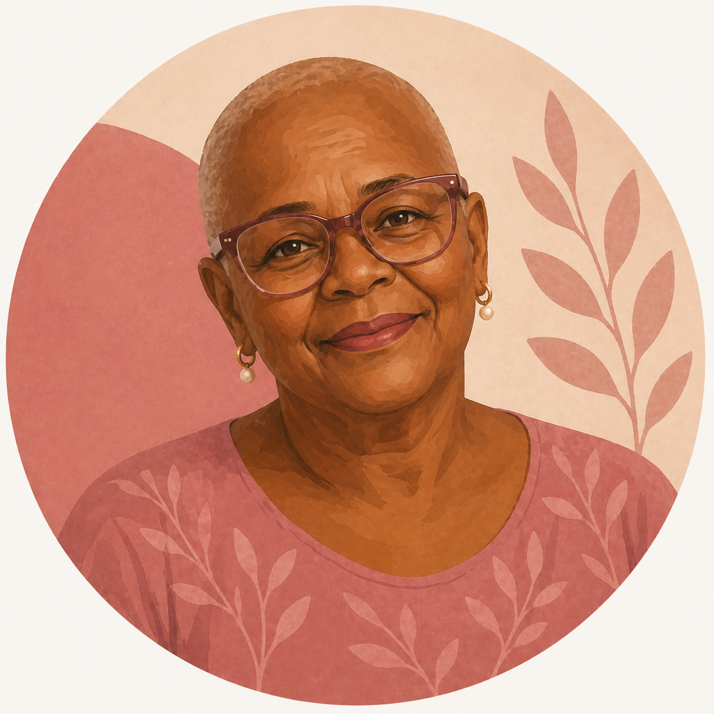
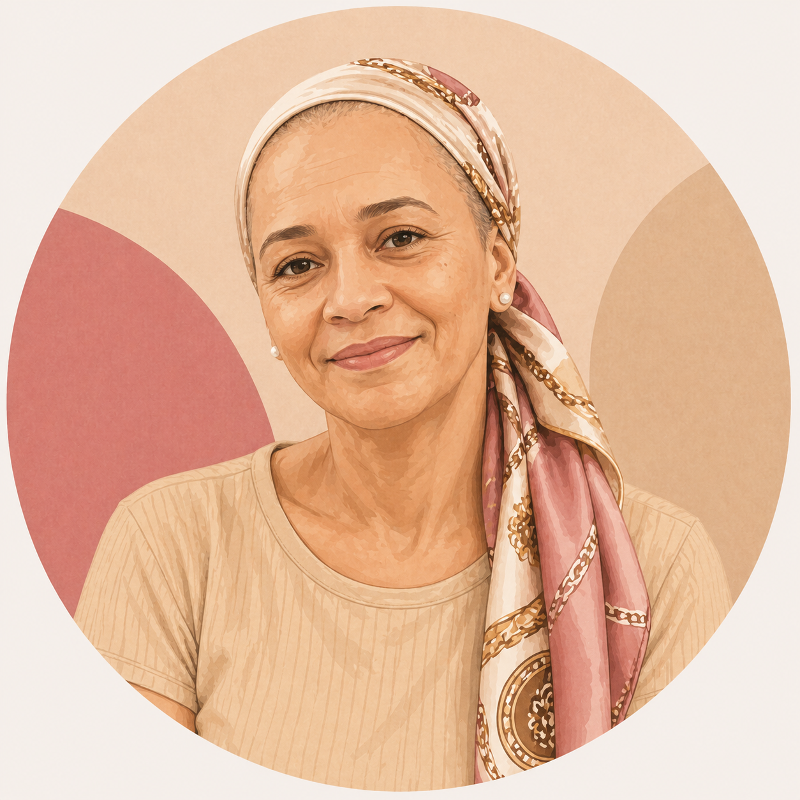
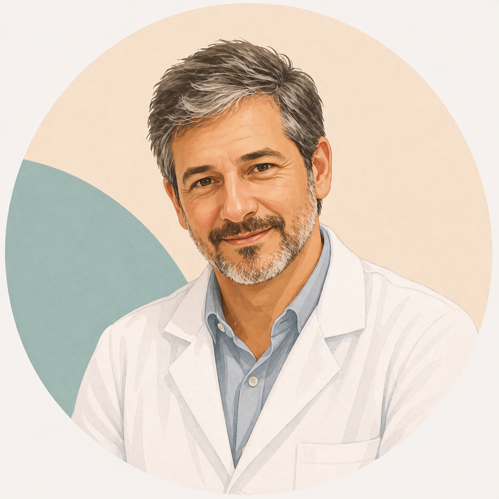
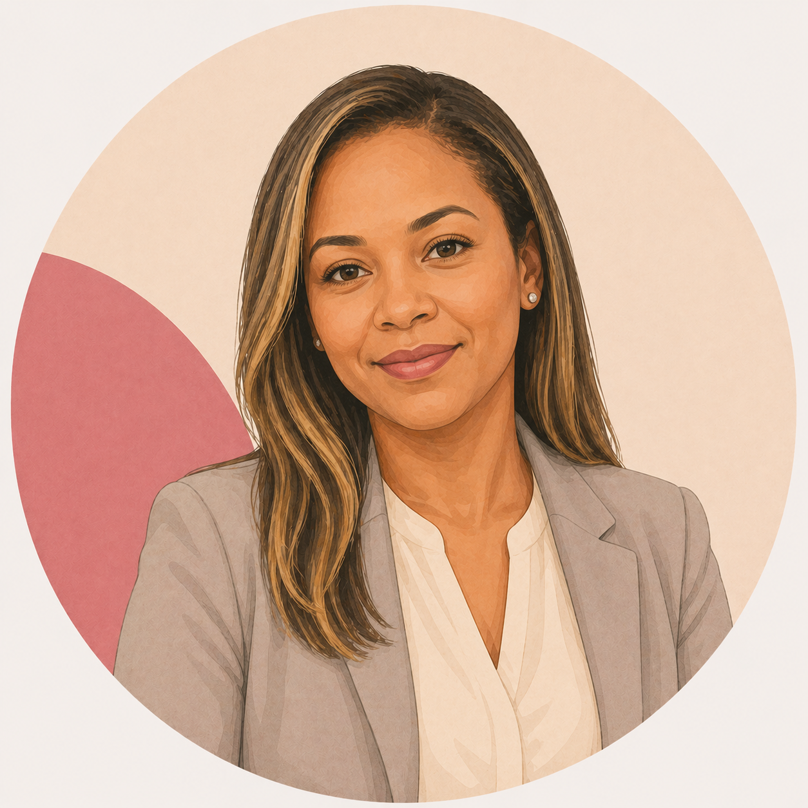

Discovery and research with patients and caregivers at a public oncology hospital in Northeast Brazil — and how data reversed an institutional belief and opened the way to transforming access to care.

slide1.png
ilustração: mulher no ponto de ônibusIt is 4am. Maria wakes before sunrise. Takes two buses. Arrives at the hospital at 6am. Waits. And waits some more. By noon, she discovers there are no available slots. She goes home without an appointment.
This was not the exception. It was the rule.
Realidade de pacientes do hospital oncológico público · Northeast, Brazil
2h+ commute — many came from the countryside by bus in the early hours
Queues from dawn — with no guarantee of being seen
Phones always busy — overloaded lines made booking impossible
No change notifications — patients only discovered schedule changes upon arrival
Caregivers far from home — many slept in support houses to keep their spot
These patients won't use technology. They are elderly, poor — many don't even have a phone."
A belief shared by management and healthcare teams at the hospital
Founded in 1945, it is a philanthropic institution offering 100% free public healthcare. A reference in oncology across Northern and Northeastern Brazil — serving those most in need, always with scarce resources.
Could a digital appointment system be implemented for low-income patients at a public oncology hospital?"
Management said no. Healthcare teams said no.
I needed data to answer with confidence.
Elderly and low-income patients do not own smartphones or have internet access.
RefutedPatients would lack the digital literacy to use a booking platform.
RefutedCaregivers act as digital intermediaries, enabling access for patients.
ConfirmedA digital system would reduce triage congestion and improve the experience.
ConfirmedI walked the hospital corridors with curiosity — and without prior assumptions. I spoke with patients and caregivers in two formats: a digital questionnaire and in-person interviews during waiting time.

slide8.png
ilustração: senhora com crochê + celularWhat the research revealed about technology access among respondents
own smartphones
The other 40% have basic phones for calls
own smartphones
And support patients through hospital processes
have mobile internet
80% of caregivers have a home internet plan
use WhatsApp
64% also use Facebook and Instagram
Needs
Pain points
Opportunities

Maria Aparecida
63 years old · patient
"If I could book online, I wouldn't have to leave so early."

José Ferreira
41 years old · caregiver
"I handle everything on the phone for her."

Rodrigo Alves
35 years old · triage receptionist
"Online booking would organize everything."
The research opened a window of opportunity. In partnership with a healthcare technology company, we developed the hospital's first digital mammogram booking channel — launched during Pink October 2021.

slide15.png
ilustração: campanha Outubro RosaWeb-based appointment system — acessível pelo celular, sem comparecer presencialmente ou ligar.
WhatsApp as communication channel — confirmations, reminders and alerts where everyone already is.
Schedule change alerts with at least 5 hours advance notice.
Direct access to radiology — no triage, no queue, no uncertainty.
Discovery & research
~80 interviews with patients and caregivers in the hospital corridors
Partnership with a healthcare technology company
Development of the online mammogram booking website
Launch — Pink October 2021
First ever digital booking channel in the hospital's history
Outcome: +69% de mamografias
2,576 in 2020 → 4,351 in 2021
Antes
Depois
For Pink October 2021, we developed alongside a healthcare technology partner the institution's first digital mammogram booking channel. Anyone could schedule their appointment by phone — without leaving home, without calling, without standing in line.
A confirmation arrived by email and the voucher was shown at the entrance — allowing the patient to go directly to the radiology department, completely bypassing the triage that had previously been the main bottleneck.
Access the booking websitePlatform features
Online mammogram booking
Date and time selection with real-time availability, no account creation required.
Email confirmation
Instant voucher with date, time and sector access instructions.
Direct access to radiology
With the voucher, patients go directly to the department — bypassing triage entirely.
Appointment rescheduling
Option to reschedule in case of no-show, without bureaucracy.
Afternoon slots made available
The system began filling previously idle afternoon shifts in radiology, increasing daily exam capacity.
New digital channel — first ever online booking system at the institution
of afternoon radiology slots now fully utilized
staff previously dedicated to phone calls — freed up for other services

Josinete Silva
Paciente
A family friend visited the website and booked for me and several other family members. I arrived, showed the booking confirmation and did the exam — it was very quick.

Marleide Afrânio
Paciente
I thought it was great, because it means we don't have to leave home to stand in a queue. You just book online and wait for the confirmation to arrive in your email.

Dr. Vieira
Radiologist and department head
The increase in demand for the service was noticeable. The process became more organized and faster. We saw a 90% reduction in the number of complaints.

Natália Pereira
Administrative supervisor
The system eliminates the need for a dedicated staff member on the phone line and removes congestion — which was disrupting the entire flow of the hospital.
When you look at the user with curiosity instead of assumption, data surprises you — and can change lives.
Public design is real design. With real constraints, real users and impact that can't fit in a mockup.
What this case study teaches
Hypotheses are meant to be tested, not confirmed. Going to the field without bias is what separates discovery from validation.
User context is the product. Understanding how Maria gets to the hospital matters as much as the interface design.
Data changes institutional narratives. The research gave the team the language to confront what management believed.